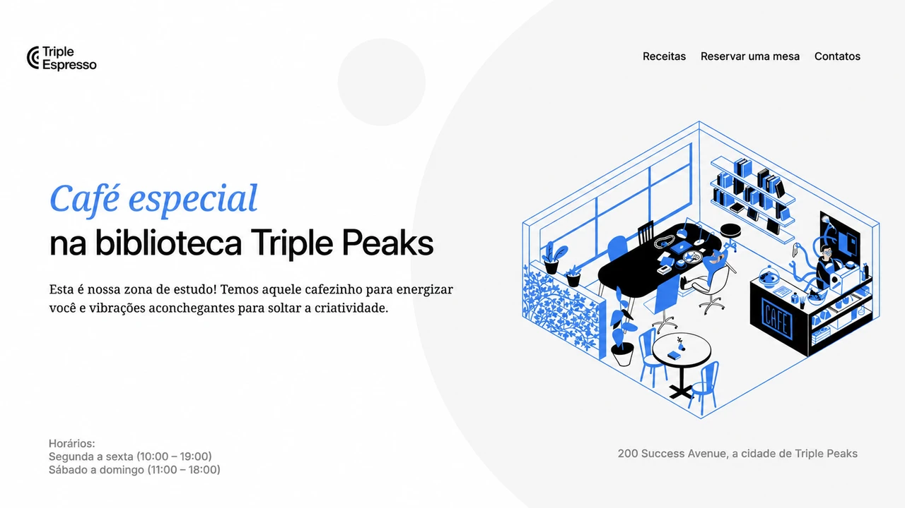
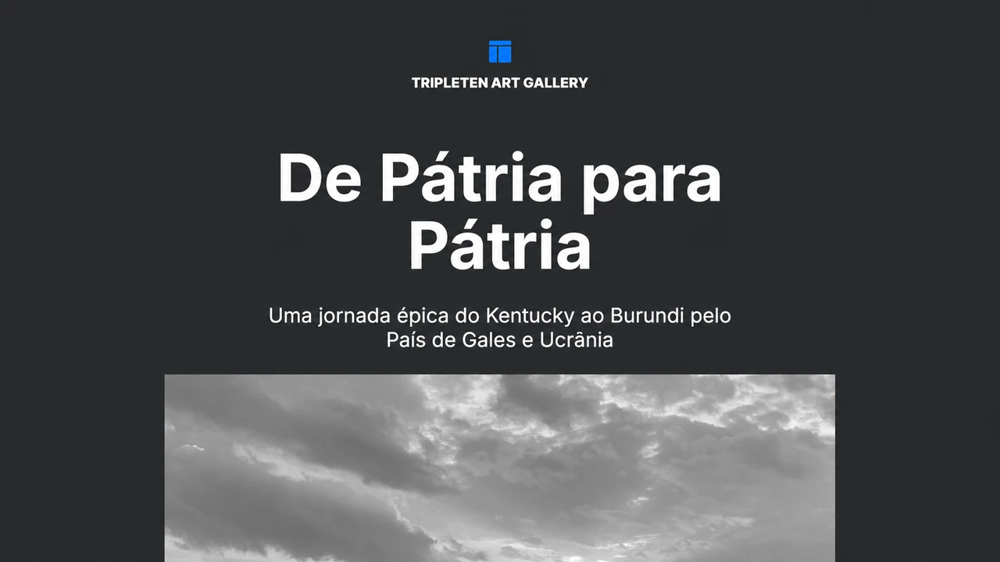
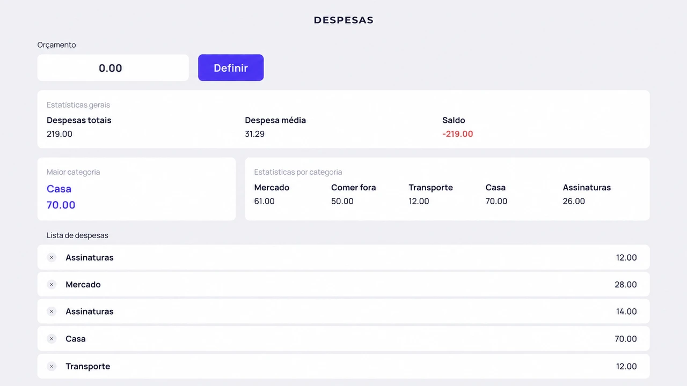
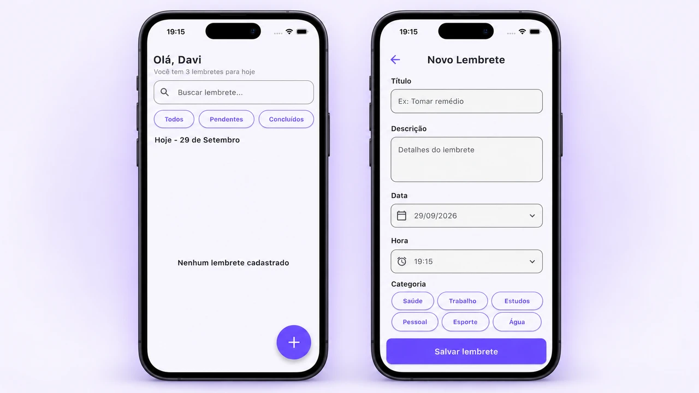
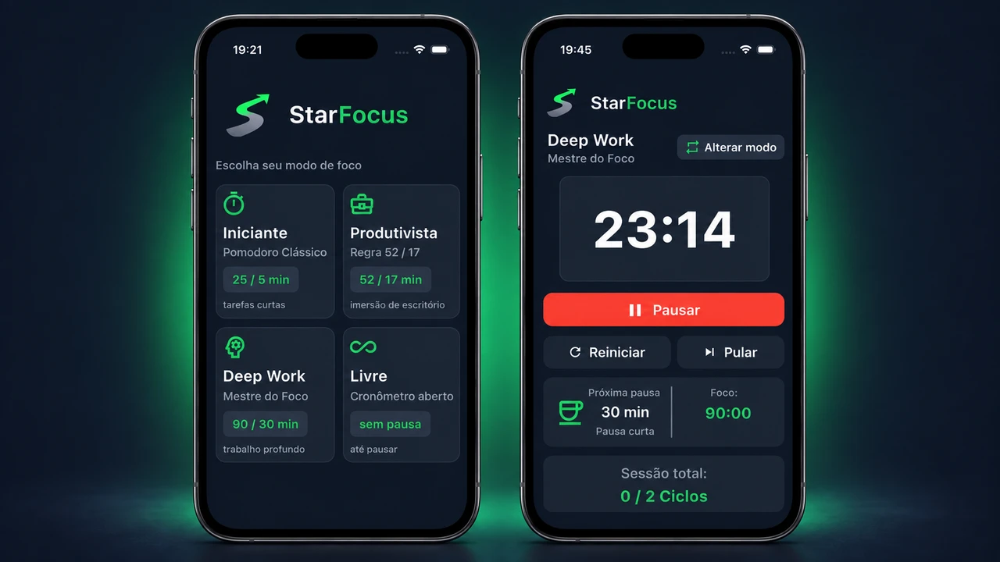
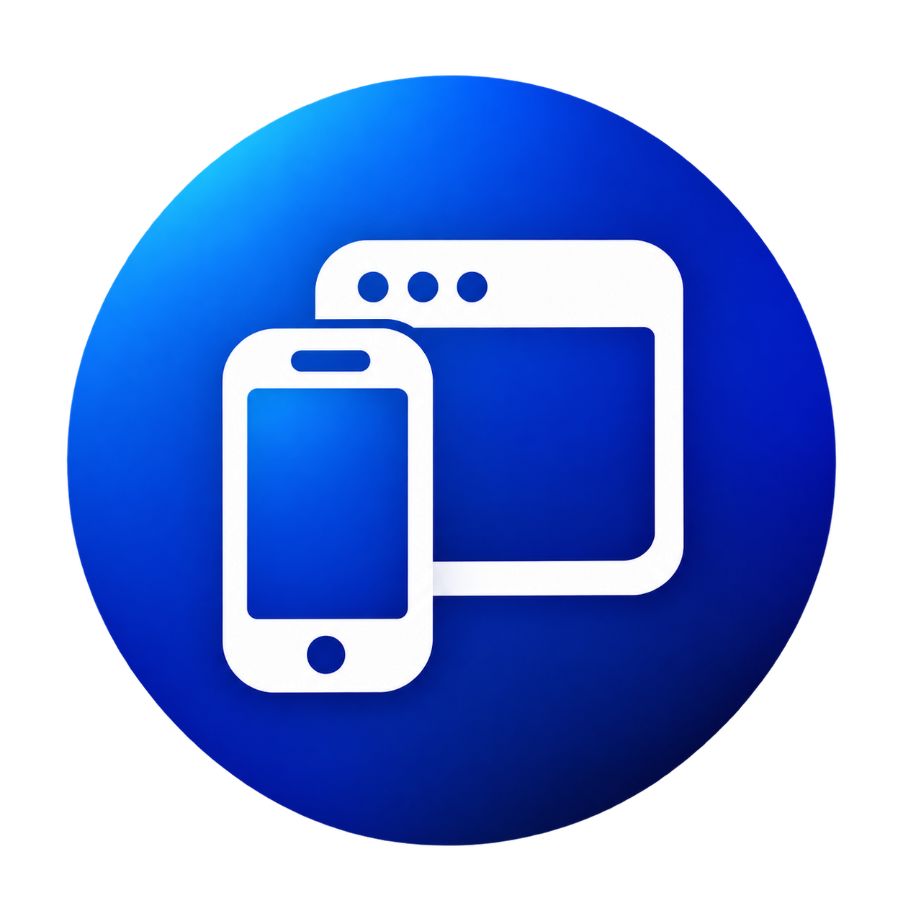

Triple Espresso
Site de uma cafeteria com informações sobre o espaço, receitas em vídeo e interface de formulário para reserva de mesas. Desenvolvido com HTML e CSS, utilizando Flexbox e organização de estilos com BEM.
Visitar projetoSou Davi Madruga, desenvolvedor de software com foco em aplicações mobile e web. Desenvolvo interfaces funcionais e intuitivas, buscando escrever código bem estruturado e criar boas experiências para o usuário.

Site de uma cafeteria com informações sobre o espaço, receitas em vídeo e interface de formulário para reserva de mesas. Desenvolvido com HTML e CSS, utilizando Flexbox e organização de estilos com BEM.
Visitar projeto
Galeria de arte que reúne fotografias e histórias de cidades ao redor do mundo, incluindo João Pessoa. Desenvolvida com HTML e CSS, utiliza Grid e Flexbox em um layout adaptável a computadores, tablets e celulares.
Visitar projeto
Aplicação responsiva para definir um orçamento, registrar despesas por categoria e acompanhar o saldo e as estatísticas de gastos. Desenvolvida com JavaScript, mantém os dados salvos no navegador com localStorage.
Visitar projeto
Aplicativo mobile em desenvolvimento para organizar lembretes do dia a dia. Permite cadastrar e visualizar lembretes com título, descrição, categoria, data e horário, utilizando formulários com validação.
Visitar projeto
Aplicativo mobile de produtividade com modos Pomodoro, Deep Work, regra 52/17 e cronômetro livre. Desenvolvido em Flutter, permite controlar sessões de foco e pausas, acompanhar ciclos e pausar ou retomar a contagem.
Visitar projeto
Espaço para apresentar um novo projeto, o problema que ele resolve e suas principais funcionalidades.
Projeto de exemploFormação voltada para desenvolvimento de software, algoritmos, estruturas de dados, banco de dados, engenharia de software e programação orientada a objetos.
Formação prática em desenvolvimento Full Stack, abrangendo HTML, CSS, JavaScript, React, Node.js e Express.js. O programa inclui desenvolvimento responsivo, Git e GitHub, programação orientada a objetos, APIs REST, bancos de dados, autenticação, testes automatizados e desenvolvimento de aplicações front-end e back-end.
Participação em atividades de triagem de equipamentos, montagem de hardware e configuração de software, contribuindo para a recuperação e preparação de computadores.
Atuação como monitor em atividades de programação, auxiliando alunos durante aulas, exercícios e atividades práticas.
Participação em competições regionais, nacionais e internacionais de robótica, com atuação em modalidades como Resgate de Alto Risco, além de experiências posteriores em arbitragem e organização.